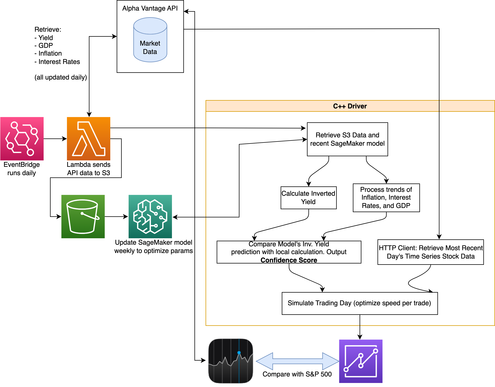
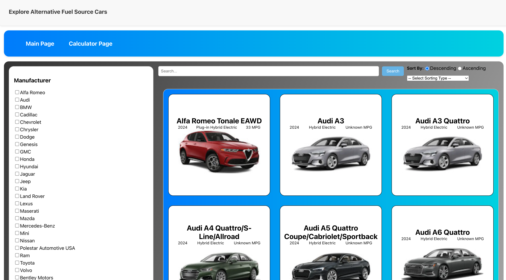
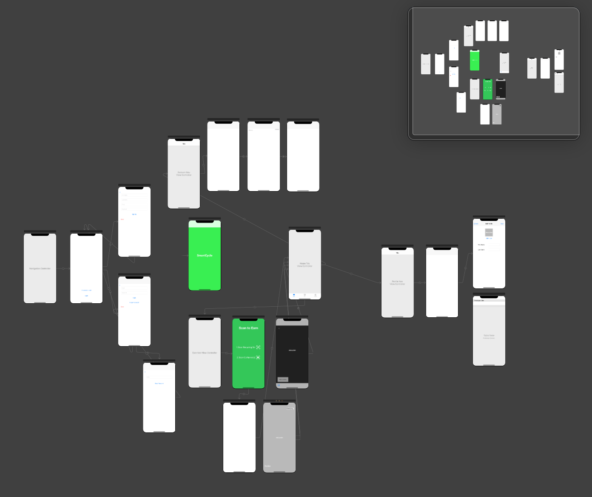
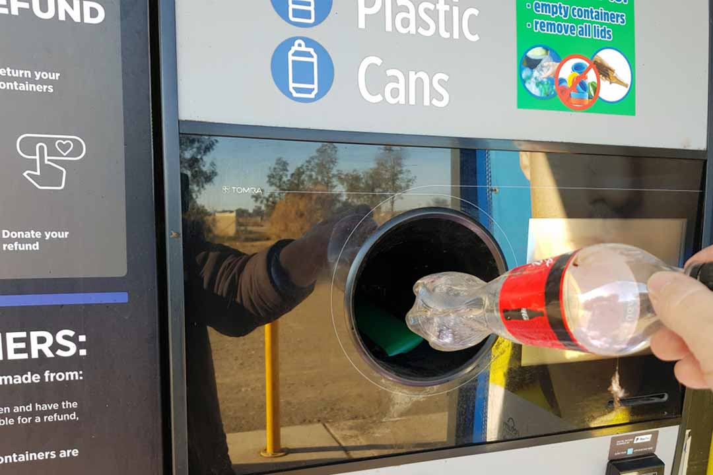
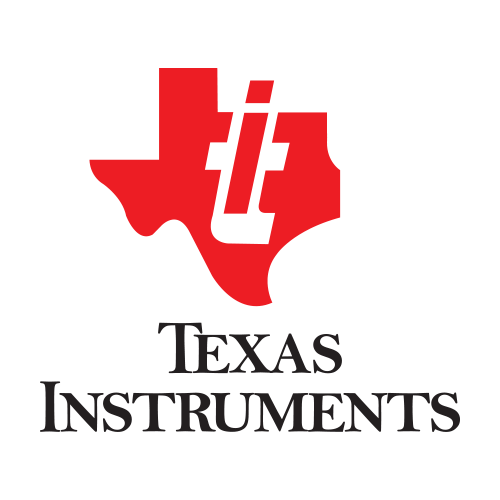
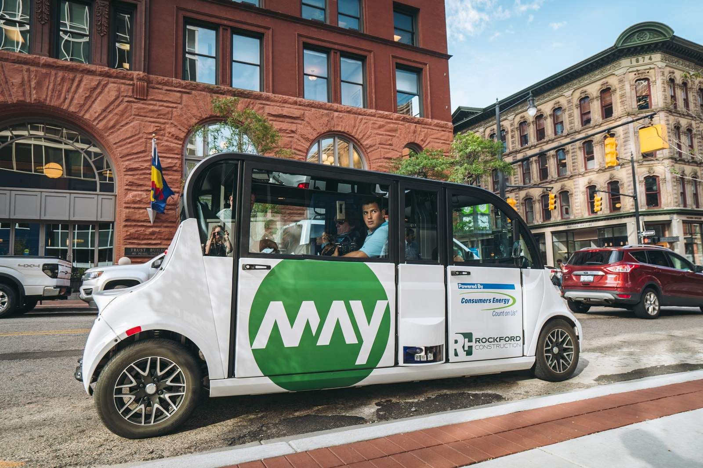
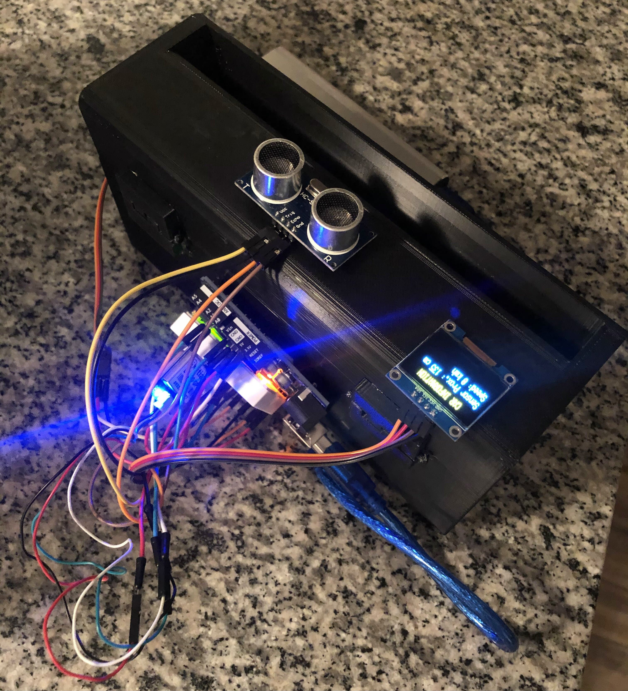

Please check out a few of my projects below!
I am currently a Software Development Engineer at Amazon Web Services, and have worked in this position since March 2023 working on full-stack development.
In December 2022, I graduated from the University of Michigan with a degree in Computer Science and a minor in Electrical Engineering.
In my spare time, I enjoy running, travelling, skiing, surfing, golf, reading, cooking, and tinkering with new frameworks and development stacks.
Multivariable Covariance of Inverted Yield Curve Day Trader Bot
Sept 2023-Dec 2023
Often times when deciding when to buy into the market, I take into account economic factors like inflation, interest rates, GDP, and even the inverted yield curve. To test a theory about their relation to day-to-day trading, I wrote a program that would find the covariance of these factors each with inverted yield in order to calculate a confidence score for trading each day.
With this confidence score, I was able to design a way to trade within reason on a per-minute cadence. In between days, I would write this data to DDB and S3 for future analysis. The end goal for this program is to incorporate Amazon SageMaker to improve the ML characteristics of the program.
Some optimizations that I performed on this program included using a profiler to reduce the runtime of certain functions, using the STL, and writing values to DDB and S3 in batches.
See the project structure on the project Github.
Electric Vehicle Explorer & Breakeven Calculator Website
July 2023-Aug 2023
Check out the website here! EV Calculator
In order to gain more experience with Typescript and React, I created a website that would display an assortment of sustainable fuel vehicles. The primary focus of this project was to learn more about creating a React app from scratch, meaning that I wanted to set up ESLint, Jest, Babel, Webpack, API calls, hooks, pages, components, etc.
A couple challenging features that I implemented included debounced searching, sorting, filtering, and pagination.
More information about this project can be found in the project GitHub.
SmartCycle Machine Learning Recycling App
May 2020-Sept 2021

It becomes more apparent every year that climate change is rapidly changing the world. My mission is to help stop the harmful effects of climate change by using technology. Recently, I took some time to do a personal project to encourage recycling.
The only incentive to recycling in most US states is a moral obligation to the environment. In other countries such as Germany, reverse vending machines for recycling are much more widespread. I wanted to make an application and sensor that would affordably adapt regular recycling bins to function as reverse recycling machines, while still rewarding recyclers. To start, users would be able to use the points at local restaurants and stores. In the future, it would be revolutionary to convert the point system directly into a monetary system to sync with bank accounts, much like how reverse vending machines reward recyclers with money.

Currently, my app only runs on iOS, but I hope to be able to develop the technology and publish it to the app store some day.
I was able to take advantage of the IBM Cloud Machine Learning algorithm to train data on thousands of images of bottles, cans, glasses, and other common recyclable items that I pulled from the internet . I also crafted the algorithm to discriminate against many common reusable water bottles to prevent people from cheating the system. The packaged data was then trained using the Apple CoreML program, which could be easily integrated into my Swift files that I made for the different screens of the app. Data for each user such as name, email, points accumulated, and rewards were backed up using Google Firebase.
Software Development Engineer (also SDE Intern Summer 2022) | March 2023-PresentAmazon Web Services

As a full-time SDE, I design, develop, and monitor software in a large-scale production environment. What I enjoy most about full-stack development is I can engineer API's from a customer use-case perspective, and deliver domain-specific solutions while handling ambiguity. On my team at AWS, I have been able to practice continuously deploying code that integrates with multiple AWS microservices. During oncall rotations and in between big projects, I perform maintenance on current solutions to improve operations.
During the time at Amazon as an intern, I created a tool that improved event impact lookup times for oncall members by 300%. The biggest takeaway I got from the internship was being able to improve my software engineering workflow to be able to plan thoroughly and ship code quickly.
Texas Instruments
Product Engineering Intern | June 2021-Aug 2021

At TI, I learned about semiconductor manufacturing at a very in-depth level. I worked on a Python program that was aimed to automate new product testing, and also learned plenty about new product qualification reports and statistical analysis.
T-Mobile
RF Engineer Intern III | June 2020-Aug 2020

During my internship with T-Mobile, I took advantage of the opportunity to learn about how one of America's top cell networks is constructed and developed.
I was able to develop a Python program that parsed T-Mobile private site online data using a webscraping driver with Selenium. The program formatted the performance metrics into Excel reports that could be sent to engineers in a much shorter time period than having engineers do it manually each day.
M-HEAL
Internal Vice President | March 2021-April 2022
Michigan Health Engineered for All Lives is a student-run organization of 200 students at the University of Michigan focused on improved healthcare and medical technologies all around the world. The club features 12 independent project teams that cover a range of global health problems, including developing hypothermia therapy for neonates with asphyxia as well as improving nutrition for children with cerebral palsy in Bangladesh.
My job as IVP was to manage and oversee the progress of all 12 remarkable projects and provide resources and opportunities for each of the teams to grow. I helped organize design reviews for the whole club to attend, facilitate recruiting, meet with external partners, and work closely with our President and External Vice President to direct the rest of our 14-person board.
M-HEAL Solar Fridge
Project Team Lead & Electrical Sub Team Lead | Jan 2019-Present
Solar Fridge is a student-run project team that is a part of Michigan Health Engineered for All Lives. Our 15 member team is iterating through insulation and thermoelectric refridgeration designs in order to cool vaccine coolers. We work with a community partner in Rincon Claro, Dominican Republic to elicit requirements.
Many developing countries lack the resources to consistently provide electricity to residents, and natural disasters further deplete electricity availability. We have improved the amount of time that dorm fridges can sustain a 2-8oC range by over 800%, and our goal is to extend this range so that the clinic can maintain vaccine viability for at least 72 hours when the power shuts off.
As the project team lead, I scheduled and lead meetings, gave presentations to our club, applied for grants and managed finances, attended workshops, communicated with our community partner, and lead recruitment. I also oversaw a lot of our project design and am particularly focused on creating a touchscreen LCD digital data logger that displays current and previous vaccine temperatures. Also, I created a PCB to condense the thermocouple leads and implemented the Arduino code driver that controls the display and SD card interface.
More information can be found at our team home page.
TechLab at Mcity
Fall 2020 Cohort Member

During the fall semester of my junior year, I worked on a team of four students as part of a company-in-residence program. Our team worked exclusively with May Mobility, an autonomous shuttle startup that has deployed shuttles in several Michigan communities such as Ann Arbor, Detroit, and Grand Rapids, as well as in Providence, RI.
Our team developed a hardware tool that improved testing procedures for the company, which allowed for more consistent test results and an ability to demonstrate safety. I personally worked on the wiring component of the tool to make sure that it works in non-ideal conditions and can be easily set up by test engineers.
It would be helpful to show some pictures of the product and detail more about how it works, but this information is restricted by the non-disclosure agreement.
Phone-Free Driving Device
Owner | Sep 2019 - Dec 2019
As part of the UM 3D Printing Club, a handful of teams entered into the GM Additive Manufacting Design Competition. The goal of the competition was to be able to design an improvement to a car with the aid of a 3D printer.

In order to prevent drivers from texting and driving, I designed a phone holder that restricted phone access unless the car was at a complete stop.
I designed the parts in AutoCAD in the shape of a box with a slot to fit a phone into. Once I 3D printed the part, I was able to attach a Servo motor to the inside as part of a mechanism to open and close the lid. I controlled this using an Arduino that attached to the back and also interfaced with a GPS module (that determined whether the car was in motion) and an ultrasonic sensor (for hands-free opening of the lid).
I was honored to place 2nd in the competition, and I developed substantial design experience with Arduino and 3D printing from the project.
Relevant Coursework
| Course Number | Course Name | Term |
|---|---|---|
| EECS 215 | Introduction to Electronic Circuits | FA 2019 |
| EECS 216 | Signals & Systems | WN 2020 |
| EECS 301 | Probabilistic Methods in Engineering | FA 2020 |
| EECS 270 | Introduction to Logic Design | FA 2020 |
| EECS 281 | Data Structures & Algorithms | WN 2021 |
| EECS 320 | Introduction to Semiconductor Devices | WN 2021 |
| EECS 370 | Introduction to Computer Organization | WN 2021 |
| EECS 481 | Software Engineering | WN 2022 |
| EECS 485 | Web Systems | WN 2022 |
| EECS 441 | Mobile App Development for Entrepreneurs | FA 2022 |
| EECS 442 | Computer Vision | FA 2022 |
| EECS 493 | User Interface Development | FA 2022 |
Berlin Study Abroad
May 2019 - June 2019
After my freshman year, I was fortunate enough to study abroad in Berlin, Germany for six weeks. During my time there, I took an introductory course in German and did a research project for a company called PYOT Labs GmbH. The project involved finding optimal 3D printing conditions for a PP/CaSiO3 polymer that we manufactured and tested in a lab.
On the weekends, we were able to take many side trips to different countries. I was able to explore Rome, Vienna, Dresden, Prague, and Munich. I am very excited to revisit Europe at some point in the future, and I included some of my favorite pictures from the trip below.